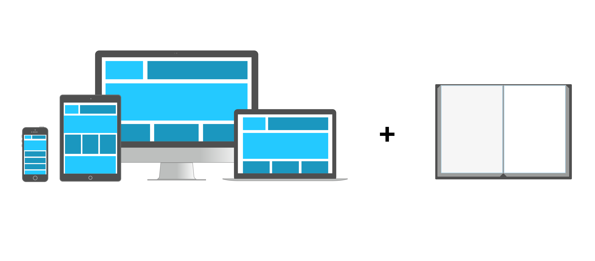

L’écran et le papier
une histoire croisée de CSS pour l’impression
par Paged.js × WeasyPrint
- Poser les termes
- Bâtir les spécifications
- Prendre des chemins différents
- Construire ensemble
Poser les termes
Qui êtes-vous ?
HTML
Exemple de HTML
<html lang="fr">
<head>
<meta charset="utf-8">
<title>Le titre de la page</title>
</head>
<body>
<h1>Le titre principal</h1>
<section>
<p>Un paragraphe dans une <strong>section</strong>.</p>
</section>
<section>
<p id="un-id">Un paragraphe dans une section, avec <em>un id</em>.</p>
</section>
<section>
<p class="une-classe">Un paragraphe dans une section, avec <em>une classe</em>.</p>
</section>
<section class="une-classe">
<p>
Un paragraphe dans une <strong>section</strong>.
<em>La section a la même classe que le paragraphe précédent</em>.
</p>
</section>
</body>
</html>
Résultat de HTML
CSS
Exemple de CSS
h1 {
color: pink;
}
section {
border: 3px solid cyan;
margin: 1em;
}
p {
font-size: 20pt;
}
#un-id {
color: #72ed7e;
}
.une-classe {
border: 3px solid purple;
}
Résultat de CSS
JavaScript
Exemple de JavaScript
Array.prototype.random = function () {
return this[Math.floor((Math.random()*this.length))];
}
var paragraph = document.getElementById("un-id");
paragraph.textContent += "Je viens du JS !";
for(var i = 0; i < 4; i++) {
var div = document.createElement('div');
div.style.cssText = "background: " + ["pink", "cyan", "#77a832", "#6d65db", "#dbae65", "#cd65db"].random() + "; border: 5px solid red;";
div.style.cssText += "position: absolute; top: " + Math.random() * 70 + "%; left: " + Math.random() * 50 + "%; width: 30%; padding: 0 1em";
div.innerHTML = '<p>FORMATION -30% EN CLIQUANT ICI</p><p>Réveillez le mâle alpha qui sommeile en vous</p>';
document.body.appendChild(div);
}
Résultat de JavaScript
Bâtir les spécifications

1991
(Tim Berners-Lee)
The WorldWideWeb (W3) is a wide-area hypermedia information retrieval initiative aiming to give universal access to a large universe of documents
HTML / CSS
Séparation du contenu et de la présentation
Responsive design with CSS media queries
@media screen and (min-width: 1080px){...}
Current browsers consider the computer screen to be the primary presentation target, but [CSS] has the potential of supporting many output media, e.g. paper, speech and braille.
Responsive design = screen + print + …
@media print {…}
Créer un PDF avec le navigateur
Flux → Pagination
Fonctionnalités manquantes
Titres courants, numéros de page, double pages, position des éléments en fonction de la page, table des matières, etc.
Organisme international de standardisation pour le World Wide Web
(Créé
par Tim Berners-Lee en 1994)
@page {
size: 148mm 210mm;
margin-top: 20mm;
margin-bottom: 60mm;
}
@page:left {
margin-left: 36mm;
margin-right: 12mm;
@bottom-left {
content: counter(page);
vertical-align: center;
}
@bottom-center {
content: string(title);
vertical-align: center;
}
}
h1#title {
string-set: title content(text);
}
Prendre des chemins différents
Le besoin et l’idée
Un peu d’histoire
L’histoire de WeasyPrint
- Il faut générer des rapports et des factures en PDF
- On essaie de faire du PDF à la main, LaTeX, OpenOffice
- On essaie d’utiliser Firefox et Chrome, mais…
Et si on écrivait notre propre navigateur ?
C’est une super idée !
Tiens, j’ai fait une preuve de concept qui lit vaguement du HTML et du CSS, qui dessine des lettres et des bordures autour, ça coupe même les pages ! C’est quasi fini, j’en suis sûr.
Faudrait quand même que je lise les spécifications un de ces jours… Ça marche comment les tableaux ? Les flottants ? Les couleurs ? La cascade ? Le DOM ? Le HTML ? Les URL ? HTTP ? Les encodages ? Les fontes ? La transparence ? Les gradients ? Le SVG ?
Are we crazy? Yes. But not that much. Each modern web browser did take many developers’ many years of work to get where they are now, but WeasyPrint’s scope is much smaller: there is no user-interaction, no JavaScript, no live rendering (the document doesn’t changed after it was first parsed) and no quirks mode (we don’t need to support every broken page of the web.)
We still need however to implement the whole CSS box model and visual rendering. This is a lot of work, but we feel we can get something useful much quicker than “Let’s build a rendering engine!” may seem.
Les avantages
- On crée un moteur de rendu réellement fait pour la pagination
- On est (plutôt) indépendants vis-à-vis des autres moteurs de rendu
- On apporte un peu de diversité dans le monde du web
Les inconvénients
- On doit faire tout le moteur de rendu
- On bénéficie peu des avancées des autres moteurs
- On court sans cesse après les nouvelles fonctionnalités CSS
L’histoire de Paged.js
L’histoire de Paged.js (à détailler)